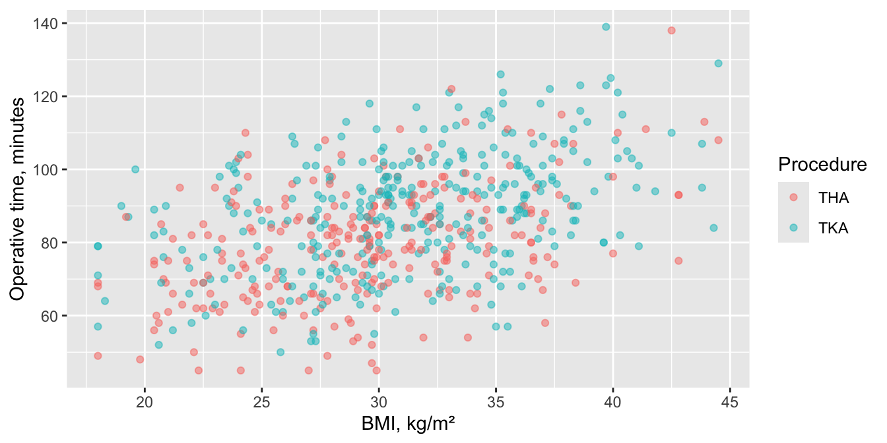
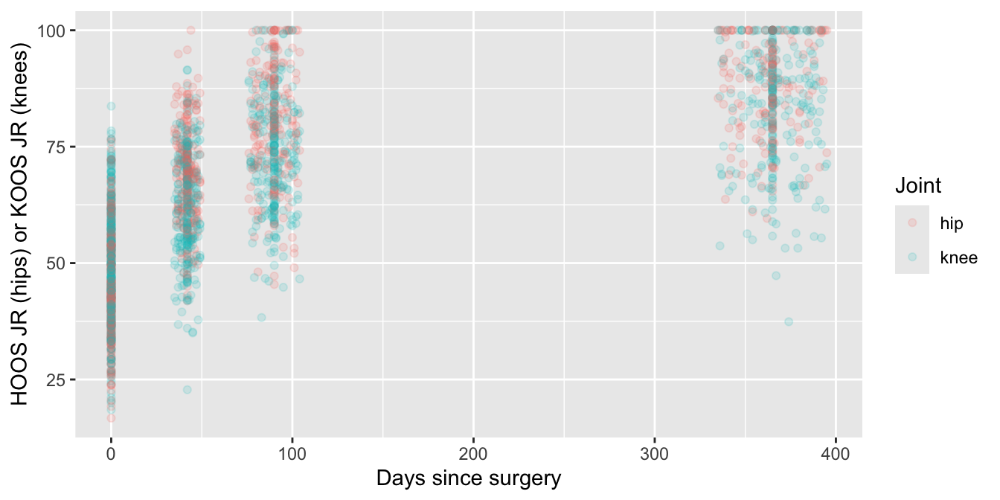
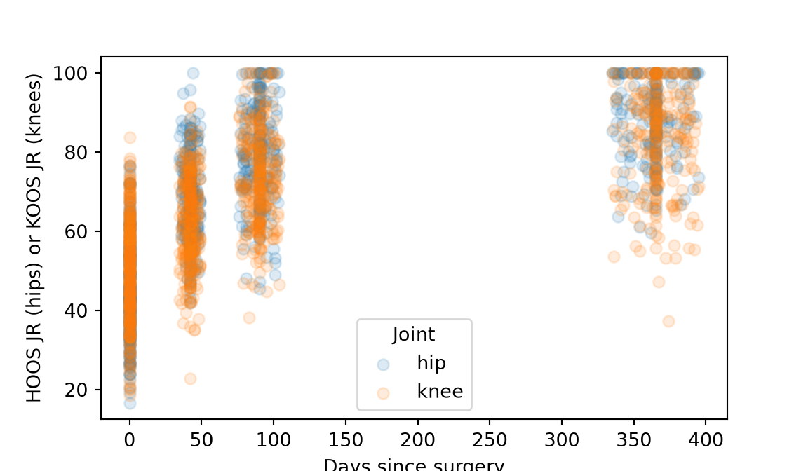

Multiple linear and nonlinear regression, multiple logistic regression and Cox regression: the effect of each predictor, adjusted for the others.
Outcomes rarely depend on one thing. Heavier patients may take longer to operate on, but so may older ones, and knees take longer than hips. Multiple regression puts several predictors in one model, so each coefficient is that predictor’s effect with the others held fixed: adjusted for them. The regressions are the same four as on page 11, with more than one predictor.
Note💡 How every section on this page works
Each section answers one question about the practice cohort. Its first code block loads the packages and the data, so you can jump straight to the section you need. Run that section’s blocks in order, top to bottom.
To keep the code short, the examples use every case, including the 80 patients who had both sides operated on. In a real study, decide how to handle them (page 3) and say what you did.
Multiple linear regression
The question: Does BMI still predict operative time once age, sex and procedure are taken into account?
When to use it
The outcome is a measurement, and you want the effect of each of several predictors, adjusted for the others.
The assumptions of simple linear regression still apply: straight-line effects, independent patients, and residuals that are roughly normal with an even spread.
Choose the predictors before looking at the results, from what you know clinically. As a rule of thumb, allow at least 10 to 20 patients per predictor.
library(tidyverse)cohort <-read_csv("data/cohort.csv", show_col_types =FALSE)ggplot(cohort, aes(bmi, op_time_min, colour = procedure)) +geom_point(alpha =0.5) +labs(x ="BMI, kg/m²", y ="Operative time, minutes", colour ="Procedure")

cohort |>group_by(procedure) |>summarise(n =n(), mean =mean(op_time_min), sd =sd(op_time_min))
# A tibble: 2 × 4
procedure n mean sd
<chr> <int> <dbl> <dbl>
1 THA 270 79.8 15.5
2 TKA 330 88.3 16.2
import pandas as pdimport matplotlib.pyplot as pltimport statsmodels.formula.api as smfcohort = pd.read_csv("data/cohort.csv")fig, ax = plt.subplots(figsize=(6, 3.5))for procedure, group in cohort.groupby("procedure"): ax.scatter(group["bmi"], group["op_time_min"], alpha=0.5, label=procedure)ax.set_xlabel("BMI, kg/m²")ax.set_ylabel("Operative time, minutes")legend = ax.legend(title="Procedure")plt.show()
Each coefficient is the change in operative time for one unit of that predictor, with the other predictors held fixed:
bmi = 1.27: 1.27 more minutes per kg/m² (95% CI 1.06 to 1.49), for patients of the same age, sex and procedure.
age = 0.27: 0.27 more minutes per year of age (95% CI 0.15 to 0.39).
sexMale (R) or sex[T.Male] (Python) = −1.48: men took 1.48 minutes less than women, but the CI (−3.81 to 0.84) includes 0. Women are the reference group because “Female” comes first alphabetically.
procedureTKA = 6.74: TKAs took 6.74 minutes longer than THAs (95% CI 4.40 to 9.08).
Multiple R-squared = 0.27, adjusted R-squared = 0.26: the four predictors together explain about a quarter of the variation. The adjusted value is penalized for the number of predictors.
F-statistic, p < 0.001: the test that all four predictors together explain nothing.
Effect size and 95% CI
The adjusted coefficients with their 95% CIs are the effect sizes, with R² for the model as a whole. BMI’s coefficient fell only a little after adjustment, from 1.37 minutes per kg/m² on its own (page 11) to 1.27: age, sex and procedure explain little of BMI’s link with operative time.
How to report it
Methods: Operative time was modeled with multiple linear regression on BMI, age, sex and procedure, chosen before the analysis.
Results: Adjusted for age, sex and procedure, the coefficient for BMI was 1.27 minutes of operative time per kg/m² (95% CI 1.06 to 1.49; p < 0.001). The coefficient for TKA (vs THA) was 6.74 minutes (95% CI 4.40 to 9.08) and for age 0.27 minutes per year (95% CI 0.15 to 0.39). The model explained 27% of the variation in operative time (R² = 0.27).
Warning⚠️ Watch out: “adjusted” isn’t “caused”, and more predictors isn’t better
Adjusting removes the part of an effect explained by the variables in the model, not by the ones you left out or never measured, so an adjusted coefficient still isn’t proof of cause. Choose the predictors in advance and stop there: adding variables until something becomes significant, or dropping those that don’t (stepwise selection), gives results that won’t replicate.
Tip🔀 R vs Python: names for the same coefficients
Both programs use the first category alphabetically as the reference (Female, THA). R names the coefficients sexMale and procedureTKA; statsmodels names them sex[T.Male] and procedure[T.TKA] (T for “treatment” coding). The numbers are the same.
Multiple nonlinear regression
The question: Do hips recover faster than knees after joint replacement?
When to use it
The curve’s shape is known, but its numbers may depend on other variables. Extend the recovery curve so that each of its numbers can differ between hips and knees, and fit one model with nonlinear least squares.
The shape isn’t known. Let a measured predictor’s effect bend with a spline: a flexible curve made of short cubic pieces joined smoothly at points called knots. A natural (or restricted) cubic spline is a straight line beyond the outer knots, which keeps it from flailing at the ends. Splines fit inside an ordinary linear, logistic or Cox model, and they’re the usual way to check whether a straight line is good enough.
library(tidyverse)library(splines)proms <-read_csv("data/proms_long.csv", show_col_types =FALSE)cohort <-read_csv("data/cohort.csv", show_col_types =FALSE)recovery_data <- proms |>filter(!is.na(prom_score)) |>mutate(days =pmax(visit_days, 0), # pre-op visits count as day 0joint =if_else(instrument =="HOOS JR", "hip", "knee"),knee =as.numeric(joint =="knee")) # 1 = knee, 0 = hipggplot(recovery_data, aes(days, prom_score, colour = joint)) +geom_point(alpha =0.15) +labs(x ="Days since surgery", y ="HOOS JR (hips) or KOOS JR (knees)", colour ="Joint")

count(recovery_data, joint)
# A tibble: 2 × 2
joint n
<chr> <int>
1 hip 906
2 knee 1146
import numpy as npimport pandas as pdimport matplotlib.pyplot as pltimport statsmodels.formula.api as smffrom scipy import statsfrom scipy.optimize import curve_fitfrom statsmodels.stats.anova import anova_lmproms = pd.read_csv("data/proms_long.csv")cohort = pd.read_csv("data/cohort.csv")recovery_data = proms.dropna(subset=["prom_score"]).copy()recovery_data["days"] = recovery_data["visit_days"].clip(lower=0) # pre-op visits count as day 0recovery_data["knee"] = (recovery_data["instrument"] =="KOOS JR").astype(int) # 1 = knee, 0 = hipfig, ax = plt.subplots(figsize=(6, 3.5))for knee, group in recovery_data.groupby("knee"): ax.scatter(group["days"], group["prom_score"], alpha=0.15, label="knee"if knee else"hip")ax.set_xlabel("Days since surgery")ax.set_ylabel("HOOS JR (hips) or KOOS JR (knees)")legend = ax.legend(title="Joint")plt.show()

print(recovery_data["knee"].value_counts())
knee
1 1146
0 906
Name: count, dtype: int64
2052 scores: 906 from hips and 1146 from knees. Both rise and level off; the hip scores seem to get there sooner.
Run it
Each of the curve’s three numbers gets a value for hips and a difference for knees: for a knee, plateau = plateau_hip + plateau_diff, and the same for start and tau.
When you don’t know the shape, use a spline instead. Here a natural cubic spline lets BMI’s effect on operative time bend, and an F test asks whether the bend improves on the straight line of the multiple linear regression.
straight <-lm(op_time_min ~ bmi + age + sex + procedure, data = cohort)bendy <-lm(op_time_min ~ns(bmi, df =3) + age + sex + procedure, data = cohort) # ns(): natural cubic splineanova(straight, bendy) # does the bend improve the fit?
Analysis of Variance Table
Model 1: op_time_min ~ bmi + age + sex + procedure
Model 2: op_time_min ~ ns(bmi, df = 3) + age + sex + procedure
Res.Df RSS Df Sum of Sq F Pr(>F)
1 595 118735
2 593 118504 2 230.57 0.5769 0.5619
bmi_knots =list(cohort["bmi"].quantile([1/3, 2/3])) # the same knots R's ns(df = 3) usesbmi_low, bmi_high = cohort["bmi"].min(), cohort["bmi"].max()straight = smf.ols("op_time_min ~ bmi + age + sex + procedure", data=cohort).fit()bendy = smf.ols("op_time_min ~ cr(bmi, knots=bmi_knots, lower_bound=bmi_low, upper_bound=bmi_high, constraints='center')"" + age + sex + procedure", data=cohort).fit() # cr(): natural cubic splineprint(anova_lm(straight, bendy)) # does the bend improve the fit?
df_resid ssr df_diff ss_diff F Pr(>F)
0 595.0 118734.576022 0.0 NaN NaN NaN
1 593.0 118504.000895 2.0 230.575127 0.576905 0.561949
Read the output
The recovery curve:
plateau_hip, start_hip, tau_hip: the hip curve, the same as fitting hips alone (page 11, exercise 3): τ = 53.4 days.
tau_diff = 27.5: knees’ time constant is 27.5 days longer, so knees recover more slowly.
plateau_diff = −3.66, start_diff = 4.25: the knee curve starts 4.25 points higher and levels off 3.66 points lower; see the warning below before reading anything into these.
The spline:
F = 0.58, p = 0.562: no clear evidence that letting BMI’s effect bend improves the fit, so keep the straight line.
Effect size and 95% CI
The differences between hips and knees, with their 95% CIs, are the effect sizes.
print(np.log(2) * estimates[4], np.log(2) * (estimates[4] + estimates[5])) # days to half the gain: hips, knees
36.996139463485335 56.05069471443701
The time constant was 27.5 days longer for knees (95% CI 15.9 to 40.1). Half of the eventual gain took about 37 days after a hip replacement and 56 days after a knee replacement, a difference of 19 days (95% CI 11 to 28).
How to report it
Methods: HOOS JR (hips) and KOOS JR (knees) were modeled against days since surgery with an exponential recovery curve whose start, plateau and time constant could differ between hips and knees, fitted by nonlinear least squares. Whether BMI’s effect on operative time was linear was checked by adding a natural cubic spline (3 degrees of freedom) and comparing the models with an F test.
Results: The difference in the time constant between knees and hips was 27.5 days (95% CI 15.9 to 40.1); half of the change was reached at about 56 days after knee replacement and 37 days after hip replacement. For BMI and operative time, comparing a spline with a straight line gave F = 0.58 (df = 2 and 593, p = 0.562).
Warning⚠️ Watch out: two questionnaires, and repeated scores
Hips answer HOOS JR and knees KOOS JR. A point on one isn’t guaranteed to equal a point on the other, so the differences in start and plateau mix up the joints with the questionnaires. The time constant is measured in days, not points, so it compares more fairly, as long as both questionnaires track recovery in a similar way. As on page 11, each joint contributes up to four related scores, so these CIs can’t be trusted: some may be too narrow and others too wide. A mixed model (page 16) handles that.
Tip🔀 R vs Python: splines and CIs
R’s ns() and Python’s cr() (from patsy, the formula library statsmodels uses) build the same natural cubic spline only when the knots match. ns(df = 3) puts knots at the 1/3 and 2/3 quantiles and at the minimum and maximum, so the Python code sets those explicitly. Other tools, like rms::rcs(), place the knots elsewhere and give slightly different curves.
As on page 11, R’s confint() profiles the nonlinear fit, while the Python code uses estimate ± t × standard error, so the CIs differ slightly (τ difference: 15.3 to 39.7 days in Python).
Multiple logistic regression
The question: Which patient factors predict a complication within 90 days?
When to use it
The outcome is yes/no, and you want the odds ratio for each of several predictors, adjusted for the others.
Events limit predictors. A common rule of thumb is at least 10 patients with the outcome per predictor. With 51 complications, this model can afford about five.
The 51 patients with a complication were older on average (71.2 against 65.0 years), with a higher BMI (32.3 against 30.3) and a slightly higher ASA class. Diabetes was a little more common (11.8% against 9.1%), and men a little less common (39.2% against 43.2%).
Each coefficient is the change in the log odds of a complication per unit of that predictor, adjusted for the others; the next step turns them into odds ratios.
age_10: p < 0.001 and bmi_5: p = 0.029: age and BMI each predict complications, even allowing for the other.
asa (p = 0.592), diabetes (p = 0.789), sexMale (p = 0.849): no clear evidence for these, once age and BMI are in the model.
ASA class is entered as a number (1 to 4), so it counts as one predictor with one odds ratio per class. As four separate groups it would use three of the model’s five or so predictors.
The adjusted odds ratios are the effect sizes: 2.08 per 10 years of age (95% CI 1.46 to 3.02) and 1.39 per 5 kg/m² of BMI (95% CI 1.03 to 1.86). The CIs for ASA class (1.16 per class, 0.68 to 2.00), diabetes (0.88, 0.31 to 2.15) and male sex (0.94, 0.51 to 1.72) are wide.
How to report it
Methods: Complications within 90 days were modeled with multiple logistic regression on age (per 10 years), BMI (per 5 kg/m²), ASA class, diabetes and sex, chosen before the analysis.
Results: Complications followed 51 of 600 procedures (8.5%). In the multivariable model, the odds ratios for a complication were 2.08 per 10 years of age (95% CI 1.46 to 3.02), 1.39 per 5 kg/m² of BMI (95% CI 1.03 to 1.86), 1.16 per ASA class (95% CI 0.68 to 2.00), 0.88 for diabetes (95% CI 0.31 to 2.15) and 0.94 for male sex (95% CI 0.51 to 1.72).
Warning⚠️ Watch out: too few events
With 51 complications, five predictors is already at the limit. Add more and the odds ratios become unstable: their CIs balloon, and some may shoot off toward 0 or infinity. If you have more candidate predictors than events allow, choose the most important ones clinically, in advance; don’t let p-values choose them for you.
Tip🔀 R vs Python: profile and Wald CIs, again
As on page 11, R’s confint() profiles the likelihood and statsmodels uses Wald CIs. With few events the two can differ in the second decimal: for diabetes, 0.31 to 2.15 in R and 0.33 to 2.30 in Python. Say which you used.
Cox regression
The question: Does implant C still carry a higher hazard of revision after adjusting for age, sex and BMI?
When to use it
The outcome is time until an event (revision), and you want each predictor’s hazard ratio, adjusted for the others.
Events limit predictors, as in logistic regression: about 10 events per predictor. 81 revisions allow about eight; implant (which uses two, B and C against A), age, sex and BMI use five.
Proportional hazards must hold for every predictor. Page 14 shows how to check it and covers Cox regression in full.
Look at the data first
Adjusting matters when the groups differ in other ways. Compare the implants:
n revised age male bmi
implant
A 246 25 65.243902 0.426829 30.626016
B 217 18 65.548387 0.423963 30.073733
C 137 38 65.970803 0.437956 30.703650
38 of 137 implant C procedures were revised, against 25 of 246 for A and 18 of 217 for B. The three groups are alike in age (65 to 66 years on average), sex (42% to 44% men) and BMI (about 30 to 31), so adjustment shouldn’t change much.
print(adjusted_cox.log_likelihood_ratio_test().test_statistic) # overall likelihood ratio test
39.13907300661026
Read the output
implantC = 3.19 (95% CI 1.92 to 5.29): adjusted for age, sex and BMI, implant C carried about three times the hazard of revision of implant A, almost the same as without adjustment (3.07, page 8).
implantB = 0.83 (95% CI 0.45 to 1.52): imprecise, as before.
sexMale = 0.51 (95% CI 0.32 to 0.81, p = 0.005): men had about half the hazard of revision of women.
age_10 = 1.22 (95% CI 0.96 to 1.57) and bmi_5 = 1.03 (95% CI 0.84 to 1.27): imprecise.
Likelihood ratio test = 39.1 on 5 df, p < 0.001: the five terms together predict revision.
Effect size and 95% CI
The adjusted hazard ratios with their 95% CIs are the effect sizes. The one the question asks about: implant C against A, 3.19 (95% CI 1.92 to 5.29).
How to report it
Methods: Revision was modeled with Cox proportional hazards regression on implant (reference A), age (per 10 years), sex and BMI (per 5 kg/m²), chosen before the analysis.
Results: After adjustment for age, sex and BMI, the hazard ratio for revision compared with implant A was 3.19 (95% CI 1.92 to 5.29; p < 0.001) for implant C and 0.83 (95% CI 0.45 to 1.52) for implant B. In an unplanned, exploratory analysis, the hazard ratio for men compared with women was 0.51 (95% CI 0.32 to 0.81).
Warning⚠️ Watch out: the unexpected finding
The sex difference wasn’t the question; the model was built to adjust for sex, not to test it. An unplanned finding like this is a reason for a new study, not a conclusion: report it as exploratory. And check proportional hazards for every predictor before trusting any of them (page 14).
Tip🔀 R vs Python: convergence and names
As on page 8, lifelines’ default convergence rule stops a little early (a hazard ratio of 0.82915 for implant B instead of 0.82912), so the Python code tightens it with fit_options={"precision": 1e-9}. lifelines names the terms implant[T.C] and sex[T.Male]; R names them implantC and sexMale.
Exercises
The solutions use the packages and data loaded in the sections above, so run the page from the top first.
1. Add surgeon to the multiple linear regression for operative time. Does it improve the model, and does BMI’s coefficient change?
with_surgeon <-lm(op_time_min ~ bmi + age + sex + procedure + surgeon, data = cohort)anova(time_model, with_surgeon) # does surgeon add anything?
Analysis of Variance Table
Model 1: op_time_min ~ bmi + age + sex + procedure
Model 2: op_time_min ~ bmi + age + sex + procedure + surgeon
Res.Df RSS Df Sum of Sq F Pr(>F)
1 595 118735
2 593 118697 2 37.343 0.0933 0.911
Results: Compared with surgeon S1, the coefficients were 0.07 minutes for S2 (95% CI −2.57 to 2.72) and 0.60 minutes for S3 (95% CI −2.28 to 3.48) (F test for adding surgeon, F = 0.09, df = 2 and 593, p = 0.911). The coefficient for BMI was 1.27 minutes per kg/m² (95% CI 1.06 to 1.49).
There’s no clear evidence that adding surgeon improves the model, and BMI’s coefficient doesn’t change.
2. A colleague wants to know which patient factors predict discharge to a facility rather than home. Only 30 patients went to a facility. Which model would you use, how many predictors can it take, and what do you find with age, sex and ASA class?
TipSolution
The outcome is yes/no: multiple logistic regression. With 30 events, the rule of thumb allows about three predictors, so choose them in advance; age, sex and ASA class are reasonable choices.
Results: The odds ratios for discharge to a facility were 2.08 per 10 years of age (95% CI 1.34 to 3.31), 1.36 for male sex (95% CI 0.63 to 2.89) and 1.06 per ASA class (95% CI 0.58 to 1.94).
The CIs are R’s profile CIs. Only age’s CI excludes 1.
3. On page 11, complications seemed to jump after age 80. Fit age as a natural cubic spline (3 degrees of freedom) in the logistic regression, compare it with the straight line, and write the Results sentence.
line_model <-glm(complication_90d ~ age, family = binomial, data = cohort)bend_model <-glm(complication_90d ~ns(age, df =3), family = binomial, data = cohort)anova(line_model, bend_model, test ="LRT") # likelihood ratio test
Analysis of Deviance Table
Model 1: complication_90d ~ age
Model 2: complication_90d ~ ns(age, df = 3)
Resid. Df Resid. Dev Df Deviance Pr(>Chi)
1 598 327.77
2 596 324.28 2 3.4911 0.1745
Results: Comparing a natural cubic spline for age with a straight line gave a likelihood ratio χ² of 3.49 (df = 2, p = 0.175). With age modeled as linear, the odds ratio for a complication per 10 years of age was 2.12 (95% CI 1.53 to 2.98).
The jump after 80 rests on 14 complications in 53 patients, too few to pin down a curve.